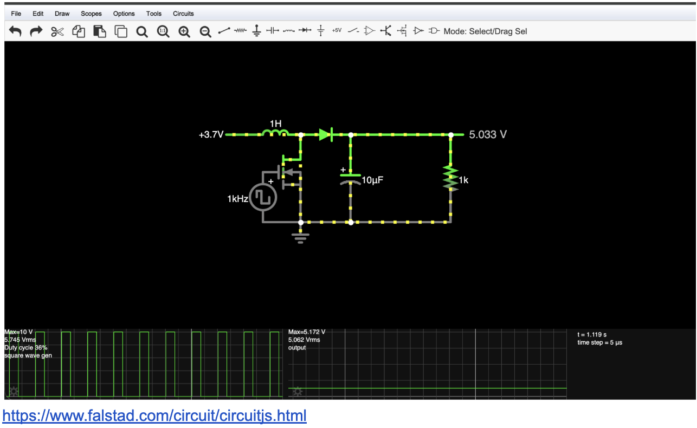
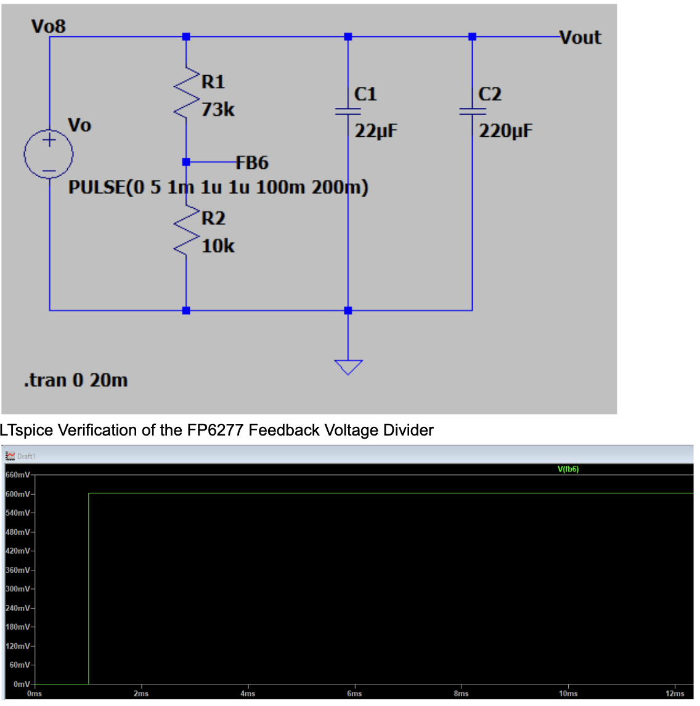
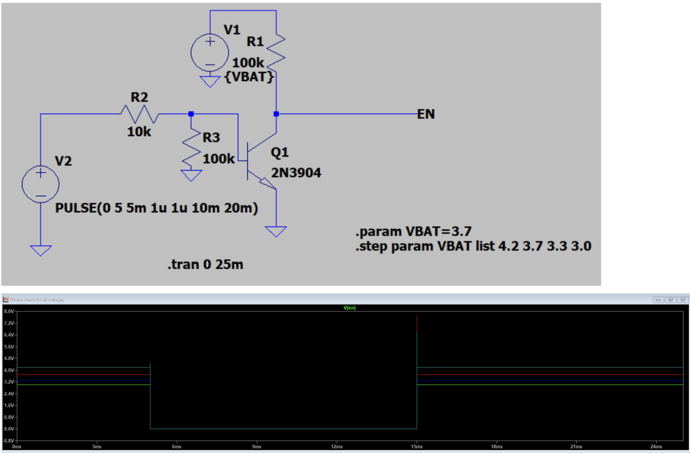
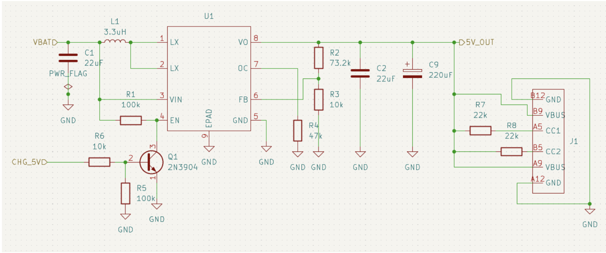

USB-C Power Bank
EE 320L Final Project/ Personal Project | Fall 2026
A custom rechargeable lithium-ion power bank designed and developed with my friend and lab partner, Kristopher Schmit.
The project combines a battery charging circuit, a DC-DC boost converter, USB-C connectivity, and a custom-designed PCB to create a portable 5V power supply.
Project Goals
- Design a rechargeable USB-C power bank
- Implement lithium-ion battery charging
- Convert battery voltage to regulated 5V output
- Design and manufacture a custom PCB
- Practice surface-mount component assembly
- Evaluate circuit performance and efficiency
Hardware
- Battery: Adafruit 5035, 3.7V 10,050mAh Li-ion
- Charging Controller: INJOINIC IP2312
- Boost Converter: FP6277XR-G1
- Output: 5V USB-C
- PCB: Custom two-layer PCB
- PCB Manufacturer: OSH Park (planned)
System Design
The power bank consists of two main subsystems: a battery charging circuit and a boost converter for delivering power to external devices.
Battery Charging
The charging circuit uses the IP2312 switching charger to regulate power delivered to the lithium-ion battery from an external 5V supply.
Kristopher is primarily responsible for the charging circuit design.
DC-DC Boost Converter
The discharging circuit uses the FP6277 switching boost converter to increase the battery's nominal 3.7V to a regulated 5V output.
I am primarily responsible for the boost converter design, component selection, and overall project coordination.
Design & Development
Understanding the Boost Converter

Before implementing the circuit, I used Falstad to explore how a boost converter steps up a lower input voltage. This helped visualize the switching behavior of the inductor, MOSFET, and diode. and helped me understand how a boost converter worked.
Final Circuit Design

I began by sketching the boost converter circuit based on the FP6277 datasheet, identifying the required components, feedback network, and USB-C connections.
LTspice Simulation

LTspice Verification of the FP6277 Feedback Voltage Divider. 0.6024V is our FB resistor network. It tells the chip how much voltage it is producing so it can regulate output to 5V.

Simulating NPN transistor behavior and making sure it can control the FP6277 boost converter's enable (EN) pin based on the presence of external USB-C charging power.
KiCad Schematic

After simulation, I transitioned to KiCad to develop the schematic and prepare the circuit for PCB layout.
Project Timeline
- October 12, 2026: Initial project planning.
- October 22, 2026: Divided charging and discharging circuit responsibilities.
- October 28, 2026: Component selection and datasheet research.
- October 29, 2026: Realized original XR6503D boost converter is near impossible to obtain so pivot to FP6277XR-G1.
- October 30-31, 2026: LTspice simulation and KiCad schematic development.
- November 2, 2026: Final confirmation of schematics. Final BOM and material orders placed. Start PCB design.
Challenges
The project introduces several new challenges, including switching regulator design, component footprint verification, PCB layout, thermal management, and surface-mount soldering.
This is our first custom-manufactured PCB project, requiring us to consider not only electrical functionality but also manufacturability and assembly.
Next Steps
- Finalize the combined PCB layout
- Complete electrical and design-rule checks
- Order PCBs
- Assemble and solder the PCB
- Test charging and discharging functionality
- Measure output voltage, current, and efficiency
- Prepare the final presentation
Project Milestones
November 18, 2026: Junior Design Competition registration deadline.
November 20, 2026: EE 320L final project presentation.
December 4, 2026: Junior Design Competition results.
Current Status
In Progress: Schematic development and PCB layout.
Updated: 11/02/2026